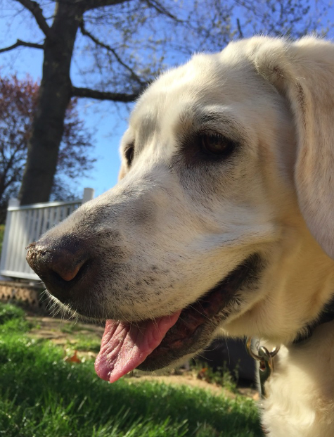
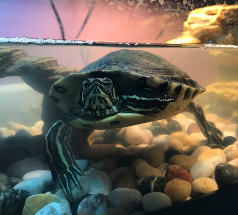
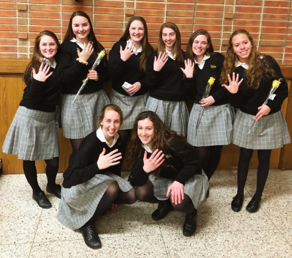
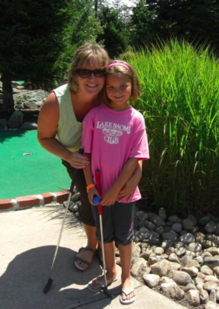
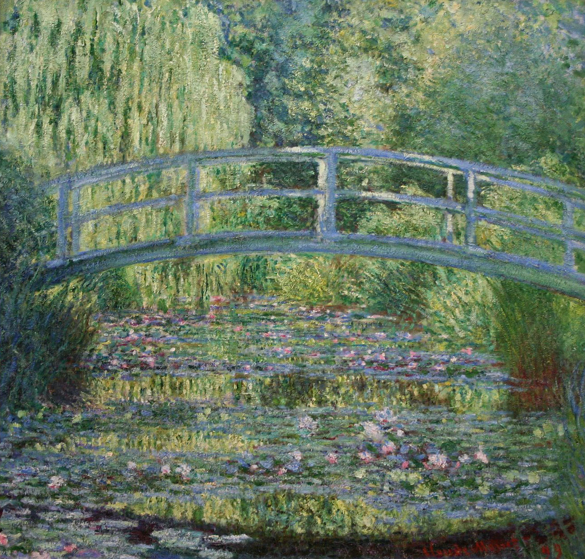
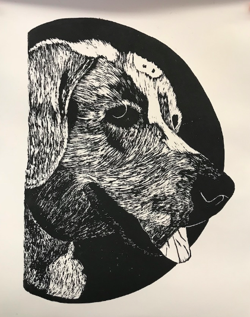
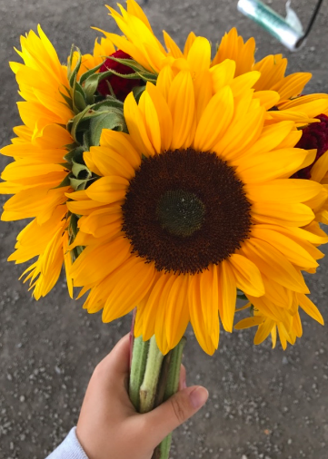

My Favorite Things!
My Pets
 
My dog Lily and my turtle Lola.
My Friends

These are my friends from Padua. This is us celebrating after junior ring mass.
My Family

This is my mom and me when I was little and my Nana and I.
Art
 
I enjoy art. My favorite painter is Claude Monet. This is a print that I made of my dog lily.
Nature

Some more of my favorite things are flowers and nature. My favorite flowers are sunflowers.